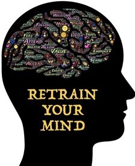

Michael J
Life Purpose...
“A life of limitless possibilities is always the only option”
Life Coaching
What is a life coach… and what do they do?
If you are one of the many people wondering what a life coach is... and what a life coach does, you are not alone. Nearly 1,500 people ask Google what the purpose of a life coach is every single month.
Agreed…it is not surprising so many people are asking Google what a life coach is, because it sounds like such a vague term.
Life is a complex thing, consisting of intimate and social relationships, health, fitness, happiness, money problems, career and so many of other aspects.
Each of these things alone can require the help of specialists like relationship councillors, financial planners, personal trainers and even medical professionals.
So can just one person, a life coach, possibly work with you to improve all these different areas of your life?
In short, yes and no.
Think about a football coach. In most cases, they are not superstar football players, but they know how to get the best out of each of the superstar players that they are coaching.
It is the same with a life coach. They might not necessarily be relationship experts, financial planners or medical professionals, but they are experts at establishing what is important in your life, helping you create an action plan to achieve it and giving you all the help, encouragement and motivation to make it all a reality.
So, to answer your question, "What is a life coach?"
A life coach is an experienced professional that enables you to identify, plan for and achieve as many of the things you want out of life as possible.
But what about the details? What does a life coach do specifically? What's the purpose of a life coach? Why do people see one? How much do they cost? What techniques do they use?
I have put together this guide to answer some commonly asked questions that naturally come to mind when asking about a life coach.
Here’s everything you will need to know about what a life coach is and how they work broken down into 5 key questions.
1. Why do people choose to see a life coach?

The best way to start explaining what a life coach is, is to look at why people see a life coach in the first place.
Whilst some professions have a very limited scope, life coaching has the widest scope you can possibly imagine. The whole spectrum of a person’s entire life is about as wide a scope as there is.
With such a wide spectrum of things a person can be experiencing in their own life, you can now imagine that there are a million and one reasons a person may choose to see a life coach.
Quite often a person may seek out a coach for clearly definable things.
Maybe you are lacking self-confidence, unhappy and unfulfilled. Or maybe you just want to achieve more success in life.
Other times it is something less easy to define. Sometimes you just simply do not know what you want but you know you want something more.
A good life coach will help you identify exactly what you want out of life. If you already know what that is, then they will help you go out there and grab it with both hands.
You see, quite often a person knows what they want out of life but they find it extremely difficult to turn it into a reality.
They may procrastinate, lose focus, lack the confidence or even the self-belief that they can do it.
When thinking about all of these different reasons, it actually boils down to one single thing why a person actually sees a life coach; their life is just not yet exactly how or where they want it to be.
This is the purpose of a life coach. People see a coach because they need a powerful mentor who will help them get their life exactly where they want it to be. Or as practically close to that as possible.
With modern technology, people can choose a life coach globally, no matter where they live meaning they can achieve all of the above from the comfort of their own homes.
2. What makes a life coach so effective??
 Life coaching is effective for a number of very powerful reasons.
Firstly, and in my opinion most importantly, it combines the power of your mind with that of your coach and focuses that power purely on making your life more meaningful.
Each session you have with your coach is dedicated to you. It is there to uncover your deepest desires, hopes and dreams and do everything possible to make them a reality.
Life coaching contrasts with therapy, because therapy focuses on things that might be wrong in your life. Life coaching focuses on your strengths and qualities internally which you already possess.
Every human being is capable of achieving the same greatness. We all have the same 24 hours in the day. Some use those 24 hours to do nothing, some use them to make millions.
If you really want to know the exact answer to what a life coach is, a life coach is there to help you change your own self-perceptions of what you can achieve and what you are capable of.
My own personal story reflects this. I used to think that spending all my time working to get an amazing career as a head teacher and being a yes man would make me the best leading practitioner in the education sector, but all the whilst I thought and behaved like that, I did nothing but burn myself out and become the victim of controlling behaviour, put in a box and ultimately bullied by jealous individuals.
But I had a burning desire for more and believed deep down that there was more to life. My life. Once I grew to understand that my life was churning up the same issues year upon year, I started to realise that my future had to change.
From being a leader in education, I went on to losing 3 stone in weight, retrained as a personal trainer and fitness coach and worked alongside some of the wealthiest business owners in the UK. I also had the capacity and creativity to design personal gyms for my clients. From there, I went on to train in physiotherapy and provide sports massage therapy. Through a great network of top business clients, I have supported men and women through physical rehab and sports injury too.
In addition to realising that my life was finally getting somewhere without having to try so hard, I undertook a Masters Degree programme in teaching yoga and have since designed personal and life changing yoga programmes for my clients.
You see, my potential was there the whole time - I just could not see it. So, what does a life coach do? They help you uncover your own potential and more importantly, they help you understand how to tap into that potential.
In the same way every single one of us on this planet has that same power to change. You just need more confidence, self-belief or simply a helping hand getting to where you want to go.
This is precisely why life coaching is so effective. We give you all the tools to re-evaluate who you are deep inside and what you are capable of achieving.
We then help you make concrete plans and spur you into action to get the life you not only wish for, but which you are destined for.
3. Will a life coach tell me exactly what I have to do with my life?

Now this is a key point you need to understand right from the beginning. A life coach will never tell you what to do.
When you first ask yourself what a life coach is, you may at first think it is someone who tells people the best way to live their life.
They might share their experiences with you, give insight and mentor you, but they will never tell you what to do.
I would share with you my experiences and tell you how I achieved what I did if you ask, but ultimately, I will encourage you and help you with all my heart to come up with your own steps to take.
Any good coach worth their salt will ask you powerful questions and encourage you to think deeply to come up with your own answers.
They will encourage you to come up with realistic plans of action that come directly from your own mind and to take steps that will work in your own hugely unique circumstances.
Will all the plans we come up with be perfect and work every time? Of course not. The plans in my own life were far from perfect sometimes, but I kept adjusting them continuously until they did work.
A skilful life coach will work alongside you over the long term and help you adjust the parts of your life plans that are not working and build on those parts that are getting you results.
As I like to say, a good coach will never kick the ball for you, they will get you in the best shape possible so you can go out there and score yourself!